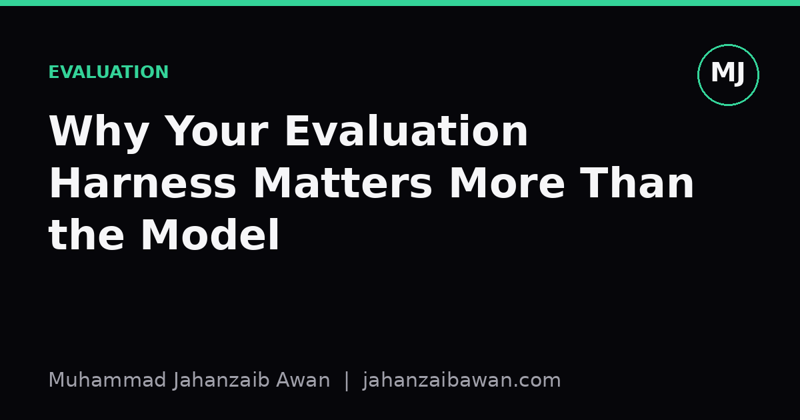

Why Your Evaluation Harness Matters More Than the Model
Picking a fancier model is the easy part. Building a measurement setup you can trust is the part that actually decides whether your project works.

The wrong question people ask first
When a new project starts, the first question is almost always which model to use. Should it be a gradient boosted tree, a transformer, a linear baseline with good features. This feels like the important decision because it is the one that shows up in the architecture diagram. But in practice, the model choice is rarely what determines whether a project succeeds. What determines it is whether you can trust the number that tells you how well the model is doing.
Consider two teams working on the same problem, say predicting whether a customer will cancel a subscription in the next month. Team A spends two weeks trying five different model families and picks the one with the best score on a held-out set. Team B spends the same two weeks building a careful evaluation harness: a leakage-checked split, a held-out period that mimics genuine future deployment, and a clearly defined baseline. Team B then trains a single logistic regression on top of it. In my experience, Team B ships something that works in production far more often than Team A does, because Team A's best score is frequently an artefact of how the split was built rather than a real signal about the model.
This is not a hypothetical concern. Evaluation mistakes are quiet. A leaking feature, a shuffled time series, or a test set that overlaps with training examples through some shared entity does not throw an error. It just makes your numbers look better than they should, and it makes every subsequent model comparison meaningless, because you are comparing models against a corrupted yardstick rather than against reality.
A worked example of the trap
Say you are predicting churn using twelve months of customer history, and you build a random split: eighty per cent of rows for training, twenty per cent for testing, drawn uniformly at random from the full dataset. Your best model reaches an AUC of 0.91. That is an excellent number by most standards in this domain, and it is tempting to conclude the model is strong and ready to deploy.
The problem is that many customers appear multiple times in your dataset, once per month, and a random split will often place some months for a given customer in training and other months for the same customer in testing. The model does not need to learn general churn signals; it can partly memorise customer-specific quirks from training rows and then recognise the same customer in the test set. Once you switch to a split by customer, so that no customer appears in both sets, and additionally split by time, so that the test period is strictly after the training period, the same model's AUC often drops, sometimes to something like 0.74.
That gap between 0.91 and 0.74 is not noise. It is the size of the lie the original evaluation was telling you. And the uncomfortable part is that the gap is entirely invisible if you never build the stricter harness. You would deploy the model expecting excellent performance, watch it underperform in production, and likely blame the model architecture, when the actual defect was in how you measured success from the very first week.
This is why I treat the harness as the first deliverable of any project, not the last. Before comparing a single model, I want a split that respects grouping and time, a clearly stated metric with justification for why it fits the business problem, and at least one honest baseline, something as simple as predicting the historical base rate or a rule derived from one strong feature. If the fancy model cannot beat that baseline by a meaningful margin on the strict split, that is real information, and it is far more useful than a high score on a leaky split.
What a strong harness actually contains
A strong evaluation harness is not just a train and test split; it is a small set of habits applied consistently. The first is leakage awareness: checking whether any information available at test time would not actually be available at prediction time in deployment, and checking whether entities repeat across splits in a way that lets the model cheat by memorisation rather than generalisation.
The second is stability under resampling. A single split gives you one number, and that number has variance you rarely see unless you check it. Running the same evaluation across several different splits, or using proper cross-validation that respects grouping and time, tells you whether your headline metric is a stable estimate or whether it swings by several points depending on which rows happened to land in the test set. If a model's reported score moves from 0.80 to 0.71 across five reasonable splits, you have learned something important: the model is fragile, or the dataset is small relative to its complexity, or both.
The third is a baseline that is genuinely hard to beat, not a token comparison. Weak baselines flatter every new model, because almost anything beats a coin flip. A baseline built from the single most predictive feature, or a simple rule an experienced practitioner in the field would already use, sets a much more honest bar. When a sophisticated model only edges out that baseline by a small, statistically uncertain margin, it tells you the added complexity may not be worth the maintenance cost.
The fourth is reproducibility: fixed random seeds where relevant, a recorded version of the data snapshot used, and a script that regenerates the split and the metric from scratch without manual steps. This matters not for its own sake but because it is the only way to know, months later, whether a reported improvement was a genuine gain or a change in how the evaluation itself was computed.
The practical takeaway
None of this means model choice is irrelevant. Architecture, features, and tuning all matter, and a well-evaluated poor model will still lose to a well-evaluated good one. The point is about ordering and where your effort pays off fastest. A better model measured on a broken harness can look worse than a worse model measured on a sound one, and you will not know which situation you are in until you have built the harness properly.
The practical habit worth adopting is to treat the evaluation setup as a first-class artefact of the project, reviewed and tested with the same scepticism you would apply to a model's predictions. Ask whether the split matches how the model will actually see new data in deployment, ask what the score would be under a boring baseline, and ask whether the headline number survives being recomputed on a different, equally valid split. If it does not survive that, you do not yet have a result. You have a coincidence, and no amount of model sophistication will fix that.